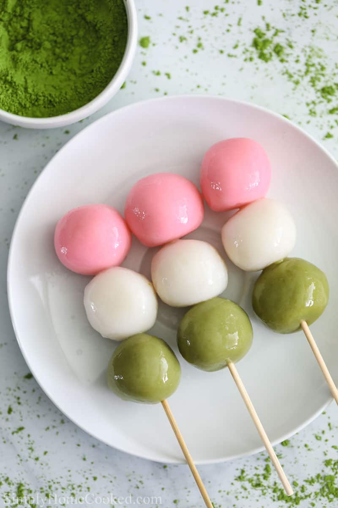

Dango

Description
Dango are firm, chewy, colorful rice balls that are a staple Japanese treat. This year round dessert is most
commonly enjoyed during the cherry blossom viewing season in Japan. Each rice ball's color holds
a symbolic meaning as this time of year typically coincides with the beginning of spring; the pink representing
spring cherry blossoms, the white representing winter snow, and the green representing summer grass.
Ingredients
- Joshinko glutinous rice flour
- Shiratamako glutinous sweet rice flour
- Powdered sugar
- Hot water
- Bamboo skewers
- Matcha powder
- Pink food coloring
Steps
- Soak the skewers
- Mix the rice flour and water in a large bowl until doughy
- Divide the dough into three peices each in a sepearte bowl
- Color one bowl of dough with pink food coloring, and the other with matcha powder
- Shape the dough into balls by hand
- Boil the white balls until they rise to the surface, continue boiling for two minutes after
- Repeat the process with the pink balls and then the green balls
- Skewer one ball of each color on a bamboo skewer